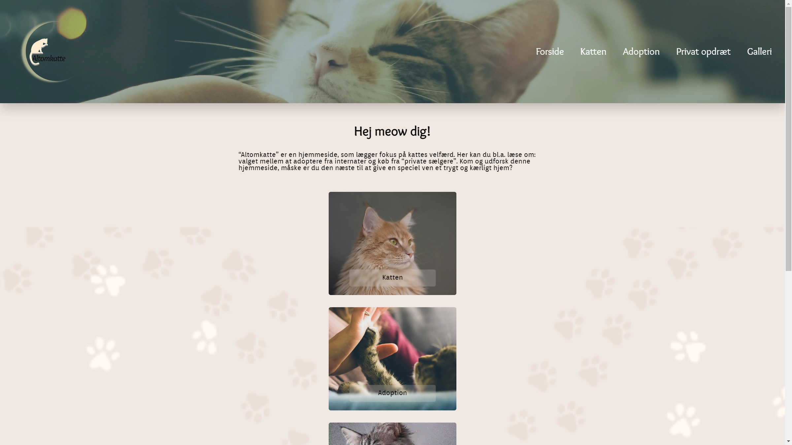

Tema 3: Grundlæggende UX/UI
Hjemmesiden: “Altomkatte”
Opgaven fra tema 3 var individuel, hvor der var mulighed for at udveksle idéer i grupper. Jeg skulle lave en hjemmeside med fokus på UX/UI-design. Valget af emne og design var åbent, og jeg besluttede mig for at fokusere på katte. Jeg valgte dette emne for at belyse problematikken omkring hjemløse katte.
Hvad har jeg lært?
Jeg blev introduceret til begreberne UX (brugervenlighed) og UI (brugergrænseflade) i dette
tema.
Jeg lærte om, hvad det vil sige at have UX og UI i mente under sin designproces, og hvordan man
indsamler empirisk data.
Desuden har jeg lært at konvertere en prototype til HTML, CSS og JavaScript-kode vha.
layoutdiagrammer.
Værktøjer
Jeg brugte de værktøjer, der blev introduceret for, såsom:
-
Figma til at designe styletiles, moodboards (LoFi og HiFi) wireframes, prototyper og layoutdiagrammer, som var vigtigt ift. designprocessen.
-
Testmetoder såsom 5-sekunders test, tænkehøjt test, user stories og lighthouse test. Disse metoder belyser på forskellig vis brugernes holdninger og anvendelse af et produkt.
-
Research metoder såsom desk-research og surveys blev anvendt til at indsamle idéer og validere mine design- og indholdsvalg.
Disse værktøjer var essentielle i min arbejdsproces og gav mig indblik i, hvordan en designproces kan udvikle sig gennem iterationer.
Proces
Under min designproces skulle jeg løbende dokumenteret mine valg. Jeg har udarbejdet et
detaljeret
dokument, som du kan
downloade for at få et dybere indblik i min arbejdsproces.
Derudover har jeg udviklet en præsentation, der giver et hurtigt visuelt overblik over min
proces.
Den løbende nedskrivning af mine ideer og processen har hjulpet mig med at opretholde et klart
overblik
over projektet,
især når det kan være omfattende.
Endelige produkt
Herunder er resultatet af mit arbejde baseret på tema 3. Hele processen har styrket mine designkompetencer, lige fra generering af idéer til det endelige produkt, og jeg har opnået en bedre forståelse for UX (brugeroplevelse) og UI (brugergrænseflade).
Du er velkommen til at udforske siden og se mit projekt:
Hjemmesiden:
“Altomkatte”